Hướng dẫn sử dụng
Đi một vòng từ nhập hàng, bán hàng đến thu nợ. Đọc lần lượt hoặc nhảy tới phần cần dùng.
Làm quen màn hình
Đăng nhập bằng số điện thoại và mật khẩu của bạn. Menu nằm bên trái, nút Bán hàng màu xanh ngọc ở góc trên mở ngay màn bán hàng.
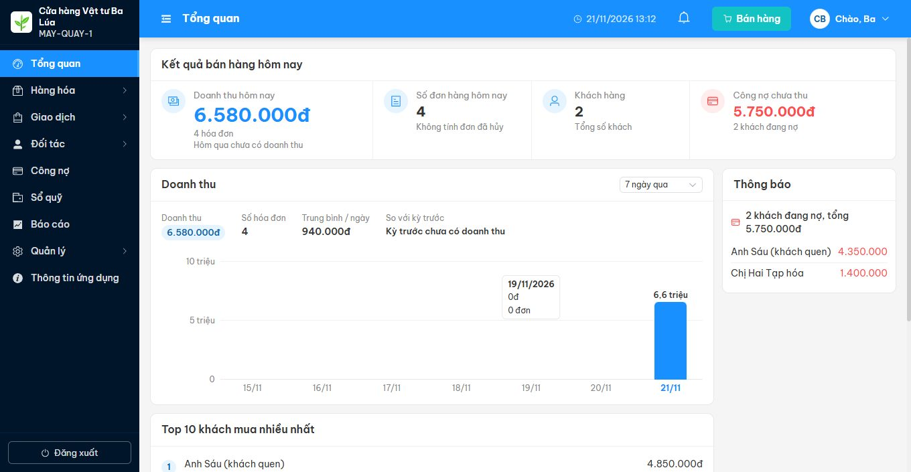
| Menu | Dùng để |
|---|---|
| Hàng hóa | Danh sách hàng, Nhập hàng, Kiểm kho, Xuất kho, Báo cáo tồn kho, Thiết lập giá. |
| Giao dịch | Đơn hàng đã bán, Trả hàng. |
| Đối tác | Khách hàng, Nhà cung cấp, Đối tác giao hàng. |
| Công nợ | Tổng hợp khách còn nợ. |
| Sổ quỹ, Báo cáo | Thu chi trong ngày và các báo cáo. |
| Quản lý | Cài đặt cửa hàng, người dùng, máy in, sao lưu (dành cho Quản lý). |
Chuẩn bị hàng hóa
Làm một lần khi bắt đầu, sau đó chỉ thêm hàng mới.
-
Thêm hàng hóa
Vào Hàng hóa → Danh sách hàng hóa → Thêm hàng hóa. Điền mã hàng, tên hàng, nhóm hàng, đơn vị tính (kg, chai, bao…), giá vốn và giá bán.
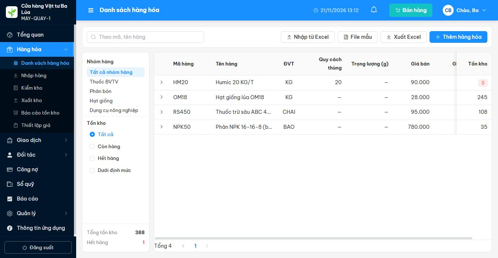
Danh sách hàng hóa. Cột "Quy cách thùng" cho biết 1 thùng có bao nhiêu đơn vị lẻ. -
Nếu hàng bán theo thùng, khai quy cách thùng
Trong phần Quy cách thùng, trọng lượng, điền Quy cách thùng (đơn vị lẻ / thùng). Ví dụ "Humic 20 KG/T" có đơn vị tính là KG, quy cách thùng là 20. Phần quy đổi ở dưới sẽ dùng số này.
-
Có sẵn danh sách lớn? Nhập từ Excel
Bấm File mẫu để tải file mẫu, điền hàng vào, rồi bấm Nhập từ Excel. Khách hàng và nhà cung cấp cũng nhập được theo cách này.
-
Thêm khách hàng và nhà cung cấp
Vào Đối tác → Khách hàng → Thêm khách hàng, và Nhà cung cấp → Thêm nhà cung cấp. Khách mua chịu hoặc nhà cung cấp cho chịu hàng đều cần có trong danh sách trước.
Nhập hàng từ nhà cung cấp
Mỗi lần hàng về kho, lập một phiếu nhập. Tồn kho và công nợ nhà cung cấp tự cập nhật.
-
Mở màn Nhập hàng
Vào Hàng hóa → Nhập hàng, bấm Tạo phiếu nhập.
-
Thêm hàng vào phiếu
Gõ mã hoặc tên vào ô Tìm hàng hóa theo mã hoặc tên, bấm vào hàng cần nhập. Với mỗi dòng, điền Số lượng và Đơn giá nhập. Hàng bán theo thùng có thêm cột SL Thùng (xem phần quy đổi bên dưới).
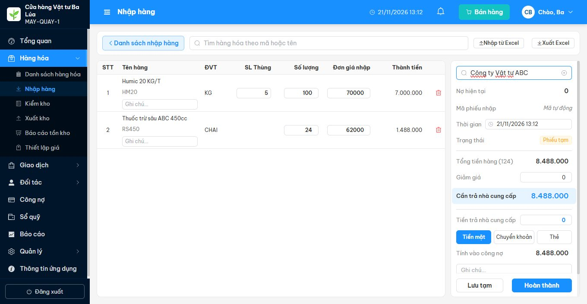
Phiếu nhập hàng. Bên phải là nhà cung cấp, tổng tiền và thanh toán. -
Chọn nhà cung cấp
Ở khung bên phải, gõ tên vào ô tìm nhà cung cấp và chọn. Khung này hiện luôn Nợ hiện tại của nhà cung cấp đó.
-
Trả tiền hoặc ghi nợ
Nhập Tiền trả nhà cung cấp và chọn Tiền mặt, Chuyển khoản hoặc Thẻ. Phần chưa trả tự ghi vào công nợ với nhà cung cấp (dòng "Tính vào công nợ"). Chưa trả đồng nào thì để tiền trả bằng 0.
-
Hoàn thành
Bấm Hoàn thành khi đã nhập xong. Nếu chưa xong, bấm Lưu tạm để làm tiếp sau.
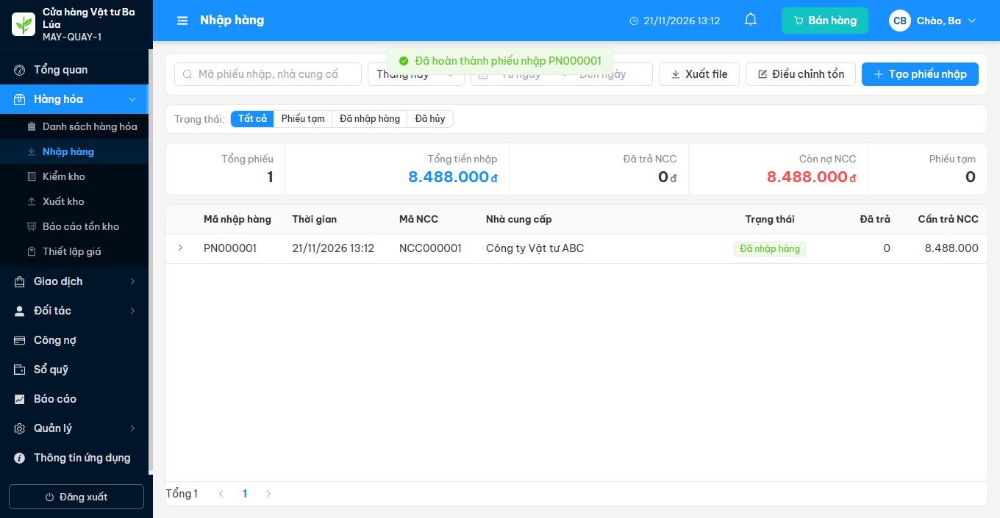
Phiếu đã hoàn thành nằm trong danh sách phiếu nhập.
Quy đổi thùng ra số lẻ
Hàng nhập hoặc bán theo thùng, nhưng giá và kho tính theo đơn vị lẻ (kg, chai, gói). App tự quy đổi cho bạn.
- Gõ 5 thùng → số lượng tự thành 100 kg.
- Hoặc gõ 30 kg → tự hiện 1,5 thùng.
-
Khai quy cách thùng một lần
Ở Chuẩn bị hàng hóa, điền Quy cách thùng cho hàng đó (ví dụ 20).
-
Nhập số thùng ở màn Nhập hàng hoặc Bán hàng
Cột SL Thùng chỉ hiện khi phiếu hoặc giỏ hàng có hàng đã khai quy cách thùng. Gõ số thùng, cột Số lượng tự tính. Gõ ngược lại số lượng lẻ, số thùng cũng tự tính (có thể ra số lẻ như 1,5 thùng).
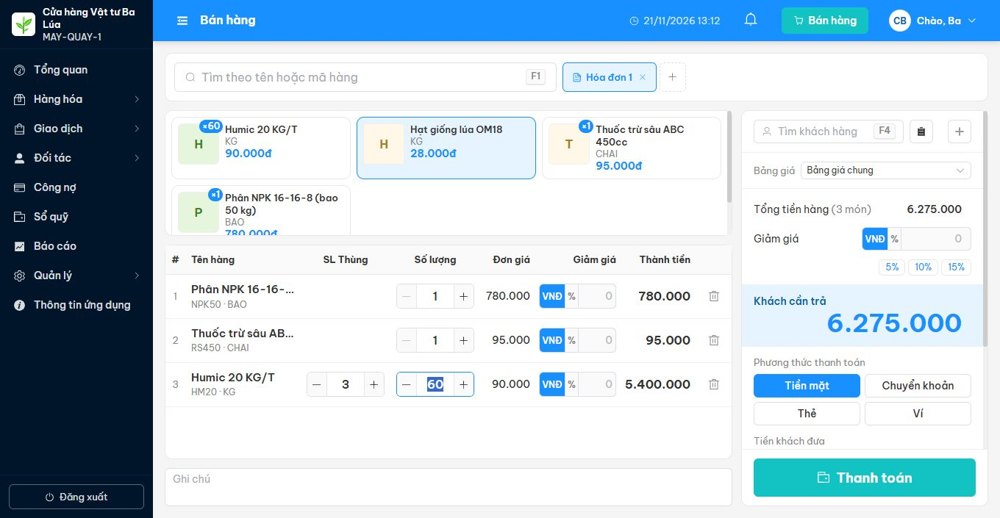
Màn bán hàng: gõ số thùng ở cột SL Thùng, số lượng lẻ tự tính.
Bán hàng
-
Mở màn bán hàng
Bấm nút Bán hàng màu xanh ngọc ở góc trên. Mỗi hóa đơn là một thẻ ở trên cùng (Hóa đơn 1), bấm dấu + để mở thêm hóa đơn khác khi có nhiều khách cùng lúc.
-
Thêm hàng vào giỏ
Gõ tên hoặc mã vào ô tìm (phím F1), hoặc bấm trực tiếp vào ô hàng ở phía trên. Chỉnh số lượng bằng nút +, − hoặc gõ số. Muốn giảm giá thì nhập số tiền (VNĐ) hoặc phần trăm ở cột Giảm giá, hoặc bấm nhanh 5%, 10%, 15%.
Màn bán hàng: giỏ hàng bên trái, khách và thanh toán bên phải. -
Chọn khách (nếu cần)
Khách mua lẻ trả tiền ngay thì không cần chọn. Khách quen hoặc khách mua chịu: gõ vào ô Tìm khách hàng (phím F4) và chọn.
-
Chọn cách thanh toán và nhập tiền khách đưa
Chọn Tiền mặt, Chuyển khoản, Thẻ hoặc Ví. Với tiền mặt, nhập Tiền khách đưa, app tính tiền thừa phải trả lại.
-
Thanh toán và in hóa đơn
Bấm Thanh toán, kiểm tra tóm tắt rồi xác nhận. Hóa đơn hiện ra, bấm In hóa đơn. Dưới nút in có dòng cho biết đang dùng máy in nào; bấm vào đó nếu muốn in ra máy khác cho lần này.
Chuyển khoản: hóa đơn có mã QR. Khi tiền về, bấm Đã nhận tiền thì nút in mới dùng được. Chưa bấm mà đóng hộp thoại thì đơn vẫn được lưu, và bạn xác nhận sau ở mục Đơn hàng.
Ghi nợ và thu nợ khách
Bán chịu (ghi nợ)
-
Chọn khách, rồi nhập tiền khách đưa ít hơn tổng
Ở màn bán hàng, phải chọn khách, sau đó nhập Tiền khách đưa nhỏ hơn tổng đơn. Phần còn thiếu được ghi nợ cho khách.
-
Xác nhận thanh toán
Hộp xác nhận hiện rõ Tổng đơn, Khách đưa và Ghi nợ. Kiểm tra rồi xác nhận. Nếu chưa chọn khách mà còn thiếu tiền, app nhắc bạn chọn khách trước.
Xem ai đang nợ
Menu Công nợ liệt kê khách còn nợ, tổng nợ cần thu, và lọc được theo khoảng nợ.
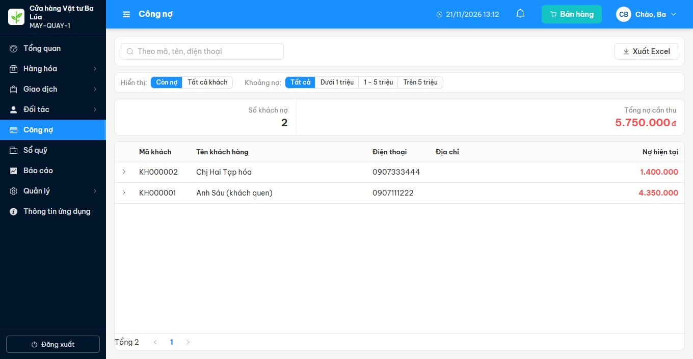
Thu tiền nợ (lập phiếu thu)
-
Mở khách nợ
Vào Đối tác → Khách hàng, bấm vào tên khách, mở thẻ Nợ cần thu từ khách.
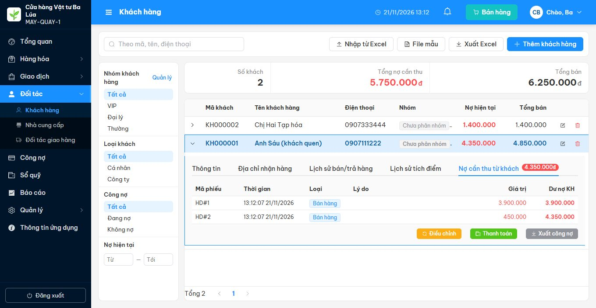
Thẻ "Nợ cần thu từ khách": các hóa đơn còn nợ và nút Thanh toán. -
Bấm Thanh toán, nhập số tiền khách trả
Bấm Thanh toán, hộp Lập phiếu thu hiện ra. Nhập Thu từ khách, chọn Tiền mặt hoặc Chuyển khoản. Dòng Nợ sau cho biết khách còn nợ bao nhiêu sau lần thu này.
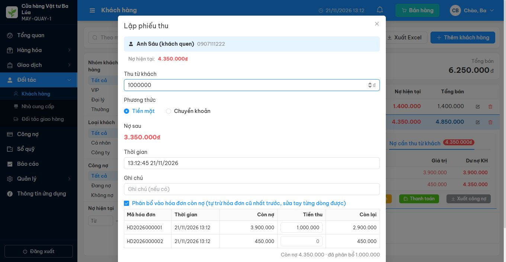
Hộp Lập phiếu thu. Tiền thu tự trừ vào hóa đơn cũ nhất trước. Tiền thu được tự trừ vào hóa đơn cũ nhất trước. Muốn trừ hóa đơn khác thì sửa số trong cột Tiền thu của từng dòng. Xong thì bấm nút xác nhận ở cuối hộp thoại để lưu phiếu thu.
Nợ nhà cung cấp
Khi nhập hàng chưa trả hết, phần còn lại thành nợ nhà cung cấp (xem phần Nhập hàng). Xem và trả nợ ở đây:
-
Xem nợ cần trả
Vào Đối tác → Nhà cung cấp. Cột Nợ cần trả hiện tại cho biết còn nợ bao nhiêu, cột Tổng mua là tổng tiền đã nhập từ nhà cung cấp đó.
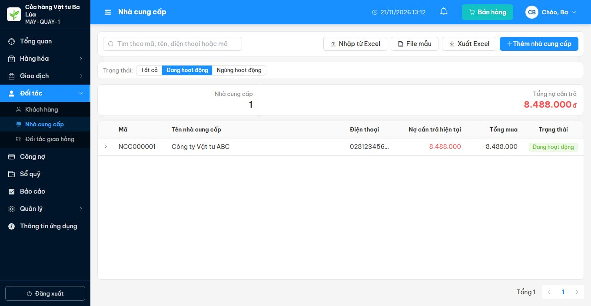
Danh sách nhà cung cấp và nợ cần trả. -
Trả nợ
Bấm vào dòng nhà cung cấp để mở rộng, rồi bấm Thanh toán. Hộp Thanh toán nợ nhà cung cấp hiện ra để nhập số tiền trả.
Xuất kho
Dùng khi hàng ra khỏi kho mà không phải bán: hủy hàng hỏng, hủy hàng hết hạn, dùng nội bộ, tặng khách.
-
Tạo phiếu xuất kho
Vào Hàng hóa → Xuất kho, bấm Xuất kho, chọn hàng và số lượng, chọn loại xuất (hủy hư hỏng, hủy hết hạn, dùng nội bộ, tặng khách, khác) rồi hoàn thành. Tồn kho giảm tương ứng.
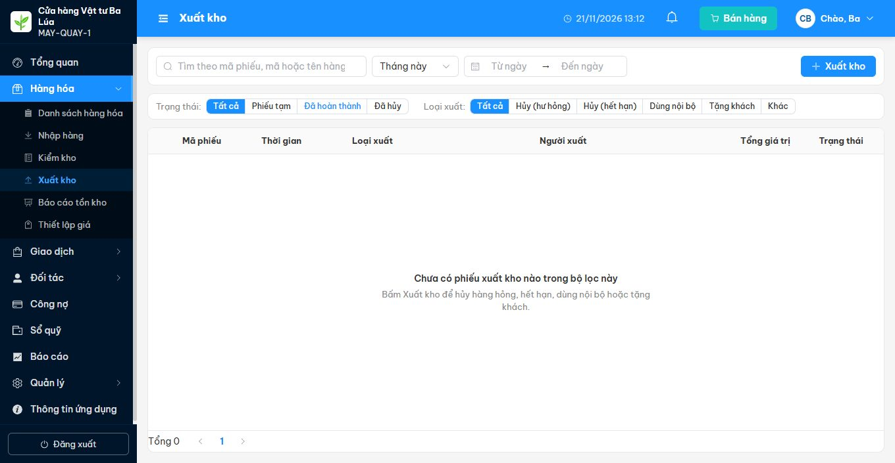
Màn Xuất kho. Lọc theo trạng thái (phiếu tạm, đã hoàn thành, đã hủy) và theo loại xuất. -
Đối chiếu bằng Kiểm kho
Định kỳ vào Hàng hóa → Kiểm kho để đối chiếu số tồn thực tế với số trên máy, rồi xem Báo cáo tồn kho.
Sửa sai: hủy đơn, trả hàng
Vào Giao dịch → Đơn hàng, bấm vào đơn cần sửa. Trong chi tiết đơn có nút Trả hàng (khách trả lại hàng) và Hủy đơn (đơn lập nhầm). Hủy đơn có thể cần quyền Quản lý.
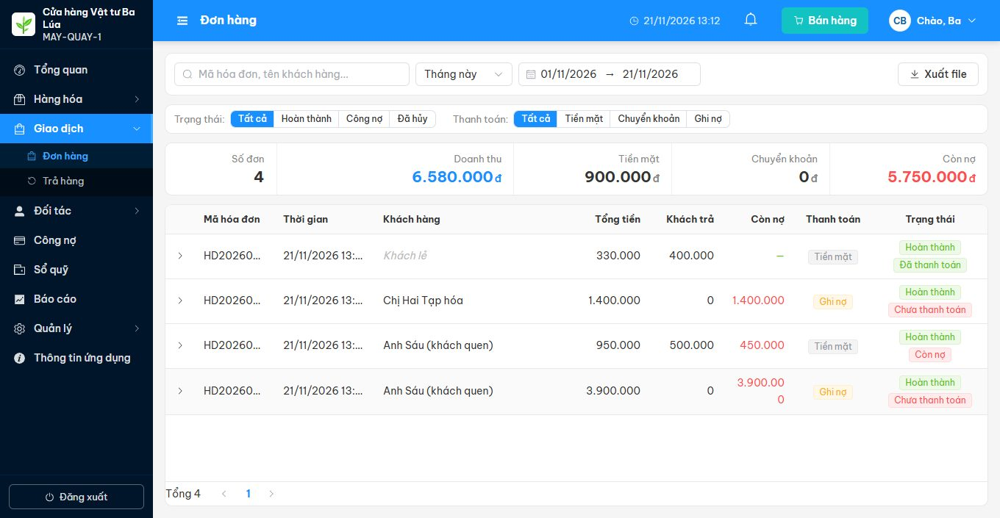
Cuối ngày
- Sổ quỹ: xem tiền thu chi trong ngày, đối chiếu tiền mặt cuối ca.
- Báo cáo, Báo cáo tồn kho: xem doanh thu và hàng còn trong kho.
- Sao lưu: app tự sao lưu. Hãy chép bản sao lưu ra USB hoặc Google Drive, xem phần Sao lưu.
- Để máy chủ chạy suốt giờ bán. Tắt máy chủ thì các quầy khác không bán được.